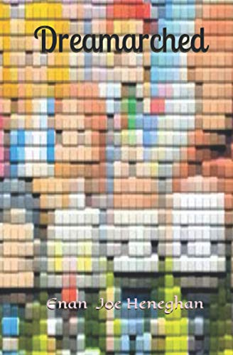

YouTube is turning Shorts into episodic television
Microdramas with arcs, built for a screen the size of a phone. The dreamarc is assembling itself in public.
Parasocial MagazineRead →
Not just grief. The shape of a whole country's week was arranged around a soap ending.
What gets lost in the parasocial framing is how much of this is civic. Fifty years of the same people, the same houses, the same four themes. When it ended, entire broadcasts moved. That is not a relationship with a television show, that is a relationship with a shared piece of infrastructure, and I do not think the vocabulary for attachment has a good word for it yet.
Notice, name, choose. That's the whole method.
The clerk's shelf - how this got here first

Sources
ABC News (Australia) · 21 SEP 2026
Where this sits in the encyclopedia
More from WORLD
Microdramas with arcs, built for a screen the size of a phone. The dreamarc is assembling itself in public.
Stever's 2026 book for scholars, the APA trends report for everyone.